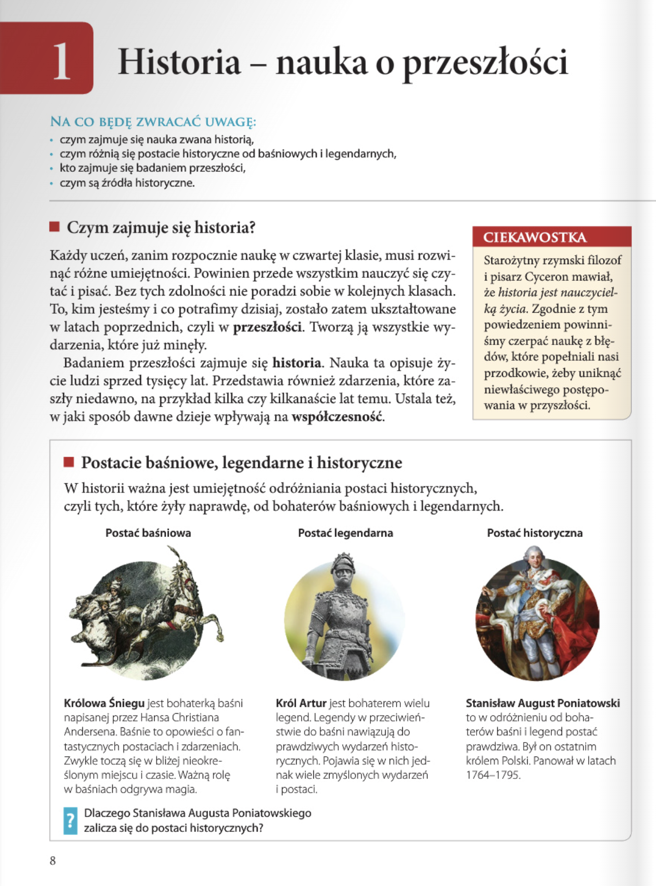
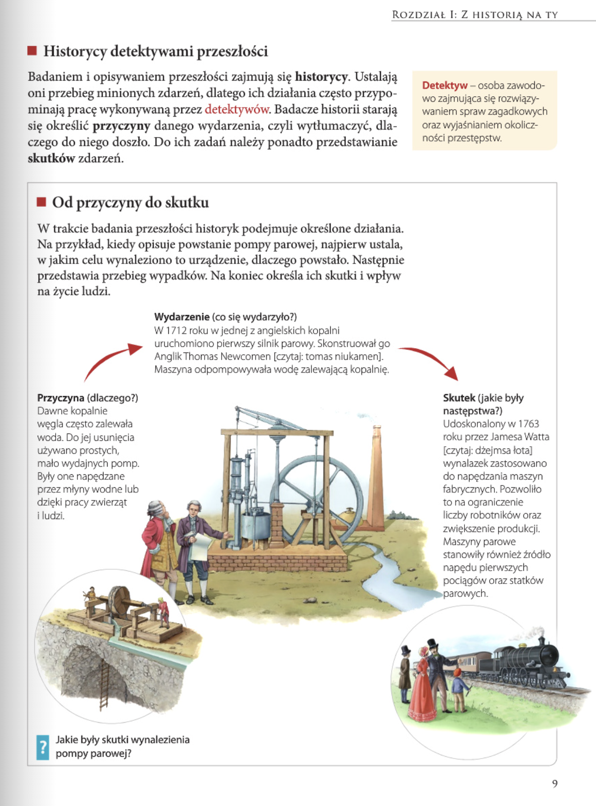
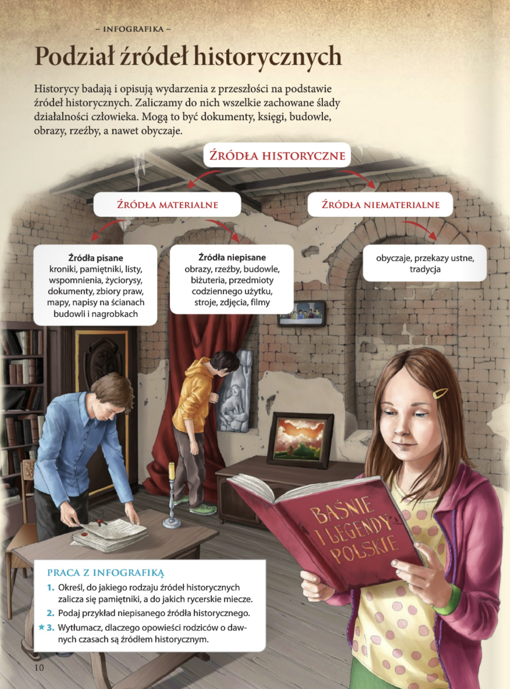
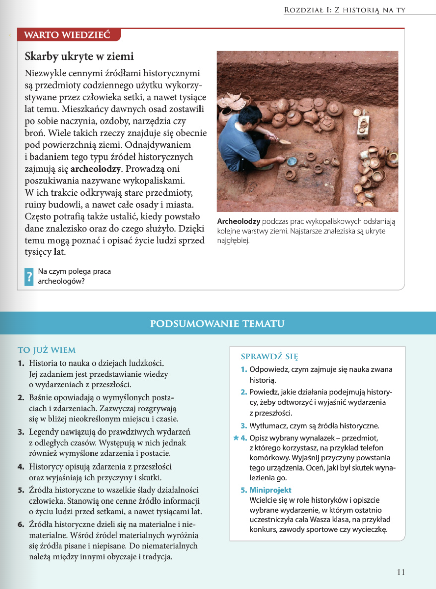

Historia
Rozdział I: Z historią na Ty
Lekcja 01. Historia - nauka o przeszłości 8-11
strona 8
Historia - nauka o przesztości
NA CO BĘDĘ ZWRACAĆ UWAGĘ:
- czym zajmuje się nauka zwana historią,
- czym róznią się postacie historyczne od baśniowych i legendarnych,
- kto zajmuje się badaniem przeszłości,
- czym są żródła historyczne.
• Czym zajmuje sie historia?
Każdy uczeń, zanim rozpocznie naukę w czwartej klasie, musi rozwinąć różne umiejętności. Powinien przede wszystkim nauczyć się czytać i pisać. Bez tych zdolnosci nie poradzi sobie w kolejnych klasach. To, kim jesteśmy i co potrafimy dzisiaj, zostało zatem ukształtowane w latach poprzednich, czyli w przeszłości. Tworzą ją wszystkie wydarzenia, które już minęły.
Badaniem przeszłości zajmuje się historia. Nauka ta opisuje życie ludzi sprzed tysięcy lat. Przedstawia równiez zdarzenia, które zaszły niedawno, na przykład kilka czy kilkanaście lat temu. Ustala też, w jaki sposób dawne dzieje wplywają na współczesność.
CIEKAWOSTKA
Starożytny rzymski filozof i pisarz Cyceron mawiat, że historia jest nauczycielką życia. Zgodnie z tym powiedzeniem powinniśmy czerpać nauke z błedów, które popełniali nasi przodkowie, żeby uniknać niewłaściwego postępowania w przyszłości.

strona 9

Historycy detektywami przeszlosci
Badaniem i opisywaniem przeszłości zajmują się historycy. Ustalają oni przebieg minionych zdarzeń, dlatego ich działania często przypominają pracę wykonywaną przez detektywów. Badacze historii starają się określić przyczyny danego wydarzenia, czyli wytłumaczyć, dlaczego do niego doszło. Do ich zadań należy ponadto przedstawianie skutków zdarzeń.
Detektyw - osoba zawodowo zajmujaca się rozwiązywaniem spraw zagadkowych oraz wyjaśnianiem okoliczności przestępstw.
Od przyczyny do skutku
W trakcie badania przeszłości historyk podejmuje określone działania. Na przykład, kiedy opisuje powstanie pompy parowej, najpierw ustala, w jakim celu wynaleziono to urządzenie, dlaczego powstało. Następnie przedstawia przebieg wypadków. Na koniec określa ich skutki i wpływ na życie ludzi.
Przyczyna (dlaczego?)
Dawne kopalnie węgla często zalewała woda. Do jej usunięcia
używano prostych, mało wydajnych pomp. Były one napędzane przez młyny wodne lub dzięki pracy
zwierząt i ludzi.
Wydarzenie (co sie wydarzyto?)
W 1712 roku w jednej z angielskich kopalni uruchomiono
pierwszy silnik parowy. Skonstruował go Anglik Thomas Newcomen [czytaj: tomas niukamen]. Maszyna
odpompowywała wodę zalewającą kopalnię.
Skutek (jakie były następstwa?)
Udoskonalony w 1763 roku przez Jamesa Watta [czytaj:
dżejmsa łota] wynalazek zastosowano do napędzania maszyn fabrycznych. Pozwoliło to na
ograniczenie liczby robotników oraz zwiększenie produkcji. Maszyny parowe stanowiły równiez
źródło napędu pierwszych pociągów oraz statków parowych.
Pytanie
Jakie były skutki wynalezienia pompy parowej?
Wynalazek Johna Kempa Starleya posiadał pedały, łańcuch oraz obracaną kierownicę.
strona 10
Podzial zródel historycznych
Historycy badają i opisują wydarzenia z przesztości na podstawie żródeł historycznych. Zaliczamy do nich wszelkie zachowane ślady działalności cztowieka. Mogą to być dokumenty, księgi, budowle, obrazy, rzeżby, a nawet obyczaje.
ŹRÓDŁA HISTORYCZNE
ŹRÓDŁA MATERIALNE
Źródła pisane
kroniki, pamietniki, listy,
wspomnienia, życiorysy,
dokumenty, zbiory praw,
mapy, napisy na ścianach
budowli i nagrobkach
Źródła niepisane
obrazy, rzeźby, budowle,
biżuteria, przedmioty
codziennego użytku,
stroje, zdjęcia, filmy
ŹRÓDŁA NIEMATERIALNE
obyczaje, przekazy ustne, tradycja
PRACA Z INFOGRAFIKĄ
- Określ, do jakiego rodzaju źródeł historycznych zalicza się pamiętniki, a do jakich rycerskie miecze.
- Podaj przykład niepisanego źródła historycznego.
Rzeźba, budynek, meble, obrazy.
- Wytłumacz, dlaczego opowieści rodziców o dawnych czasach są źródłem historycznym.
Opowieści są źródłami historycznymi, gdyż niosą ze sobą wiedzę o przeszłości. Dzięki nim jesteśmy w stanie dowiedzieć się, jak wyglądało życie przed naszymi narodzinami, a także dostrzec różnice pomiędzy przeszłością a czasami współczesnymi. Opowieści zaliczają się do niematerialnych źródeł historycznych.

strona 11

WARTO WIEDZIĆ
Skarby ukryte w ziemi
Niezwykle cennymi źródłami historycznymi są przedmioty codziennego użytku wykorzystywane przez człowieka setki, a nawet tysiące lat temu. Mieszkańcy dawnych osad zostawili po sobie naczynia, ozdoby, narzędzia czy broń. Wiele takich rzeczy znajduje się obecnie pod powierzchnia ziemi. Odnajdywaniem i badaniem tego typu źródeł historycznych zajmują się archeolodzy. Prowadzą oni poszukiwania nazywane wykopaliskami. W ich trakcie odkrywają stare przedmioty, ruiny budowli, a nawet całe osady i miasta. Często potrafią także ustalić, kiedy powstało dane znalezisko oraz do czego służyło. Dzięki temu mogą poznać i opisać życie ludzi sprzed tysięcy lat.
Archeolodzy podczas prac wykopaliskowych odsłaniają kolejne warstwy ziemi. Najstarsze znaleziska są ukryte najgłebiej.
Pytanie
Na czym polega praca archeologów?
Archeolodzy zajmują się odkrywaniem oraz badaniem źródeł historycznych ukrytych pod powierzchnią ziemi.
PODSUMOWANIE TEMATU
- Historia to nauka o dziejach ludzkości. Jej zadaniem jest przedstawianie wiedzy o wydarzeniach z przeszłości.
- Baśnie opowiadają o wymyślonych postaciach i zdarzeniach. Zazwyczaj rozgrywają się w bliżej nieokreślonym miejscu i czasie.
- Legendy nawiazują do prawdziwych wydarzeń z odległych czasów. Występują w nich jednak równiez wymyślone zdarzenia i postacie.
- Historycy opisują zdarzenia z przeszlości oraz wyjaśniają ich przyczyny i skutki.
- Źródła historyczne to wszelkie ślady dzialalności człowieka. Stanowią one cenne źródło informacji o życiu ludzi przed setkami, a nawet tysiącami lat.
- Źródła historyczne dzieli się na materialne i nie materialne. Wśród żródeł materialnych wyróznia się żródła pisane i niepisane. Do niematerialnych należą między innymi obyczaje i tradycja.
SPRAWDZ SIE
- Odpowiedz, czym zajmuje się nauka zwana historią.
Rozwiązanie
Historia jest nauką, która bada przeszłość.
- Powiedz, jakie działania podejmują historycy, żeby odtworzyc i wyjaśniż wydarzenia z przeszłości.
Rozwiązanie
HŻyciorys postaci historycznych jest najczęściej mniej lub bardziej udokumentowany. Co więcej, za dowód ich istnienia przyjmuje się wiele wydarzeń, które miały miejsce za ich życia, a w których owe postaci mogły brać udział.
Postacie legendarne nie mają dokładnie udokumentowanego życiorysu, często za to mają związek z wydarzeniami lub postaciami uważanymi za nieprawdziwe lub zmyślone. Takie postaci mogą też występować w różnych legendach, sagach czy innych nie do końca prawdziwych źródłach.
- Zastanów się, a następnie wybierz i opisz wybrany przez siebie wynalazek. Może to być przedmiot, z którego korzystasz na co dzień, na przykład telefon komórkowy. Wyjaśnij, dlaczego to urządzenie powstało, po czym oceń, jakie były skutki jego wynalezienia.
- Miniprojekt
Wcielcie się w role historyków i opiszcie wybrane wydarzenie, w którym ostatnio uczestniczyła cała Wasza klasa, na przykład konkurs, zawody sportowe czy wycieczkę.
GPS (ang. Global Positioning System) – jest to system nawigacji satelitarnej, obejmujący zasięgiem całą Ziemię. Służy do ustalania pozycji użytkownika, co w domyśle ma ułatwić mu orientację w terenie. System GPS został stworzony przez Departament Obrony USA, zaś jego historia sięga drugiej połowy XX wieku.
Na samym początku swego istnienia, urządzenie to wykorzystywane było wyłącznie w wojsku. Aktualnie, po udostępnieniu owej technologii zwykłym obywatelom, jest to jedno z najpopularniejszych urządzeń, obecne w naszych telefonach, autach, a nawet hulajnogach elektrycznych czy przesyłkach, bez którego ciężko jest wyobrazić sobie współczesne podróżowanie.